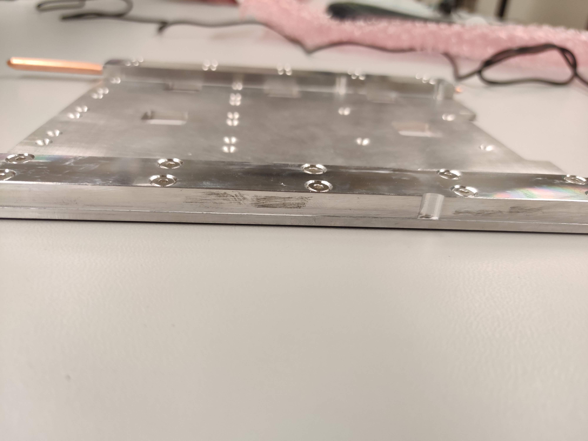
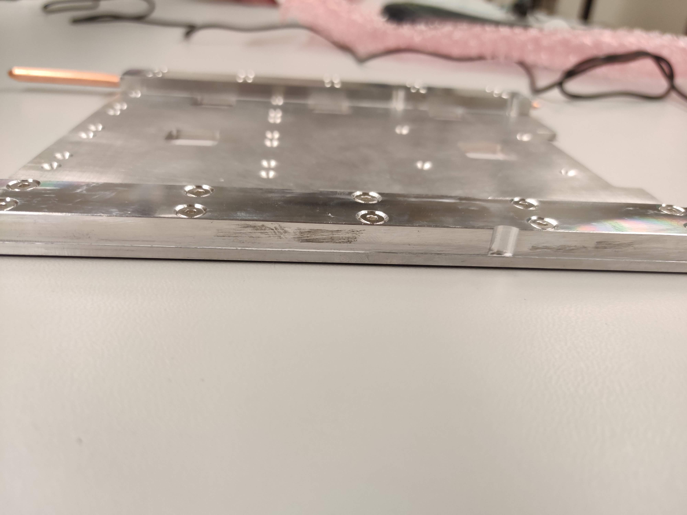

DCB mechanical assembly
Visual inspection of new DCB
Record serial number from sticker on the DCB to the database and put a new label on the board.
Warning
Make sure you are grounded at all times when handling the DCB!
-
Look for scratches, gouges, and any other signs of obvious damage on the surface of the DCB.
-
Inspect more thoroughly by focusing on 1 GBTx cluster at a time. All clusters should be the same and include the same components. If a piece appears to be missing, compare to the other groups. If they are all the same, it is likely correct
- Look for any pieces that are bent, broken, or otherwise askew within each cluster.
Note
Each GBTx has a marked corner which must match a white dot on the DCB. The black SCA also has marked corner and dot.
Note
There are also a couple small components, the ones next to pieces labeled "R500", with faint white lines on one side. That side also points to a white dot on the DCB
The dots are on the top left in this example

-
Now look at the 4 mezzanine connectors (the connectors inside the outline). Angle the DCB to see each pin clearly and confirm there are no globs of solder possibly connecting two pins. Also confirm that no pins are bent or broken.
-
Next flip the DCB over so that you are looking at the bottom side of the DCB. Check the bottom side near the optical mezzanines to ensure that there are no extra globs os solder protruding through the surface of the DCB.
Note
If there are extra globs of solder present then it can short the DCB when assembled to the backplate.
An example of the extra globs of solder is shown here

-
Finally examine the large backplane connecter on the other end of the DCB.
- Look into the connector at the pins and make sure they are all uniform. A bent pin could break a backplane.
- Tilt the DCB to look between the board and the connector. It is attached by many small solder pads so must lay flat and straight. Any angle or disconnected pads should be noted.
Install thermal gap filler on the DCB backplate
There are pre-cut thermal fillers for the DCB backplate. Peel the film off and put it on, making sure that the pre-cut holes align with the holes of the DCB backplate. It is much easier to ensure the thermal gap filler is straight if two people work together.

Warning
Make sure that the thermal gap filler is placed on the flat side of the backplate.
The backplate is not symmetrical. The thermal gap should be put on the side that doesn't have countersuck screw holes.
Once the thermal gap filler looks straight then use a screw to take out any leftover thermal gap filler over the screw-holes that may have not been trimmed off. This will ensure that the backplate will connect smoothly to the DCB and that no residue from the thermal gap filler will attach to the DCB.
Install the heat pipe on the DCB backplate
To install the heat pipes:
-
Put a thin line of thermal grease on the pipes using a spreader, not going all the way to the edges. The grease squeezes out when the pipes are installed and tightened.
-
Use 10 M.3 countersunk bolts to secure the heat pipe to the backplate. Note that it is easiest to screw in opposite diagonal bolts first to fix the heat pipe.
-
Wipe away excess grease along the sides of the heat pipe. Can use Isopropyl Alchohol to clean residue if needed (above 70% IPA).
-
Repeat for the second heat pipe.
Warning
Pay attention to the direction of the heat pipe! The long end should point toward the flat side of the backplate and the short piping toward the notched side.
Follow the pictures below for further guidance or if anything is not clear.
 

Final assembly
Note
The final assembly is easiest with two people!
For final assembly of the board:
-
Use 16 M.2.5 countersunk bolts along with 16 long M.2.5 hexagonal nuts to install the DCB backplate onto the DCB and provide supports for the optical mezzanines. The bolts should be placed on the backplate side and should fit into the countersunk holes while the nuts will sit on top of the DCB. Again fix opposite diagonal bolts first.
Note
This is for the flat edge/long pipe side of the assembly.
Warning
The nuts on top of the DCB should not be rotated as they will damage the surface of the DCB. In order to prevent this secure the nut using pliers or a socket wrench and use a screwdriver to tighten.
-
Use 8 M.3 countersunk bolts along with 8 short M.3 hexagonal nuts and Kapton washers to secure the notched side of the backplate. The washers should be placed on the DCB to protect it from the hex nut.
Warning
The nuts on top of the DCB should not be rotated as they will damage the surface of the DCB. In order to prevent this secure the nut using pliers or a socket wrench and use a screwdriver to tighten.
-
Install jumpers to the board according to the picture, these are needed to configure the DCB.
Red Lines are where the jumpers go

Note
You should install 10 jumpers to the following connectors:
J2 pins 1-3,2-4
J4 pins 3-4
J10 pins 3-4,5-6
J12 1-2,3-4,5-6
J13 1-3,2-4 -
Finally, install the optical mezzanines. (To be added)
Warning
The standoff/screw on the DCB side should not be rotated to avoid damages to the surface of the DCB.


Continuity check
Measure the resistance between any of the TP5 around the data GBTxs and the
aluminum backplate. The resistance should be very large to ensure the backplate
is not electronically connected to the DCB.